Welcome to Coastal Hydrodynamics Lab. at KU
Better Understanding of Coastal Hydrodynamics: Towards Safer and Sustainable Coasts
Research Interests
Our research interests are basically towards a better understanding of coastal hydrodynamic processes which tend to be highly complex and turbulence-dominant due to a variety of physical factors, for example, irregular geometry, wave breaking, pycnocline, thermocline, flow-structure interactions and natural extreme events in the nearshore area. Therefore, our works easily expand into coastal hazards and environmental impacts associated with coastal hydrodynamics. While the most of our works were done by numerical modelling, some of our researches also cover laboratory experiments and field observations to excel work performances. Engineering-focus projects such as measures for coastal erosions\storm surges\flooding\oil-spills are of particular interests since they require practical insights that Dr. Son had obtained through industrial experiences prior to joining Korea University. Find out more....
해안유체역학 연구실은 바다에서 일어나는 복잡한 흐름과 변화를 과학적으로 해석하는 곳입니다. 지금 우리 해안은 기후변화와 인위적인 개발로 계속 모습을 바꾸고 있고, 그 결과 연안침식, 쓰나미·폭풍해일 범람, 오염 확산, 이안류 같은 다양한 현상들이 이전과는 다른 방식으로 나타나고 있습니다. 저희 연구실은 이론·수치모델링·현장 및 실험 관측을 모두 활용해, 파랑과 조류가 만들어내는 여러 해안수리 현상의 원리를 파고듭니다. 그리고 이렇게 파악한 과학적 근거를 바탕으로 변화하는 해안환경에 어떻게 대응해야 할지에 대해 실질적이고 지속가능한 해결책을 제시하는 데 집중하고 있습니다. 이 연구는 단순한 학문적 작업을 넘어, 해안환경을 지키고, 재해를 줄이며 방파제 등 연안 구조물의 설계 기준을 더 똑똑하게 만들고 궁극적으로 사람과 자연이 함께 안전하게 살아갈 수 있는 해안환경을 만드는 데 기여합니다.
Research Keywords: Coastal Hydrodynamics, Sediment Transport, Numerical Modelling(CFD), Tsunamis/Storm Surges, Turbulent Mixing in the Nearshore, Oil Spill Modelling
Announcements
-
New Ph.D/MS students!
Coastal Hydrodynamics Lab. is seeking a new, motivated MS/Ph.D student who will work on research topics as nearshore hydrodynamics, coastal processes, coastal hazards(storm surges/tsunamis) and sediment transport. Please contact Dr.Son at sson(at)korea(dot)ac(dot)kr if you are interested. -
Prof. Figlus, Prof. Brody and Dr. Lee at Texas A&M Univ. visited CHL
We were honored to host Prof. Jens Figlus, Prof. Samuel Brody and Dr. Yoonjeong Lee from Texas A&M University on March 13, 2025, for an exciting and productive day of research discussions and collaboration-building with CHL. During their visit, Prof. Figlus delivered a captivating talk titled "Coastal Engineering for More Resilient Infrastructure: The Promise of Nature-Based Solutions." His presentation highlighted innovative approaches to coastal resilience, focusing on integrating natural and engineered systems to create sustainable, adaptive infrastructure in the face of growing coastal hazards. The visit also provided an excellent opportunity for in-depth conversations on potential collaborative research projects between Texas A&M University and CHL.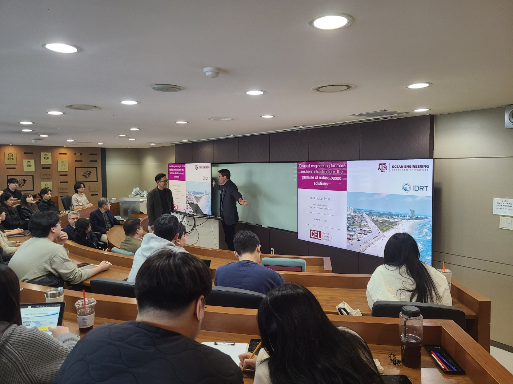
-
Prof. Son delivered invited virtual lecture at Universitas Hasanuddin
On October 17, 2024, Prof. Son delivered a virtual guest lecture hosted by the Department of Geophysics at the Faculty of Mathematics and Natural Sciences, Universitas Hasanuddin, Indonesia. His lecture, titled "Shallow Flow Modelling Based on Perturbation Theory: Past, Present, and Future," provided deep insights into the evolving field of fluid dynamics and oceanography. -
2024 Summer Research Trip to Jungseon
We departed to Jungseon province for a two-day summer research trip. Especially, Prof. Na from the Kumho Institute of Technology, a former CHL post-doc, joined our trip with his undergraduate interns. This trip offered a perfect blend of field experiences and relaxation, creating an enriching and enjoyable atmosphere. A delightful BBQ, sharing laughter and stories late into the night, added another chapter of our joyful memories.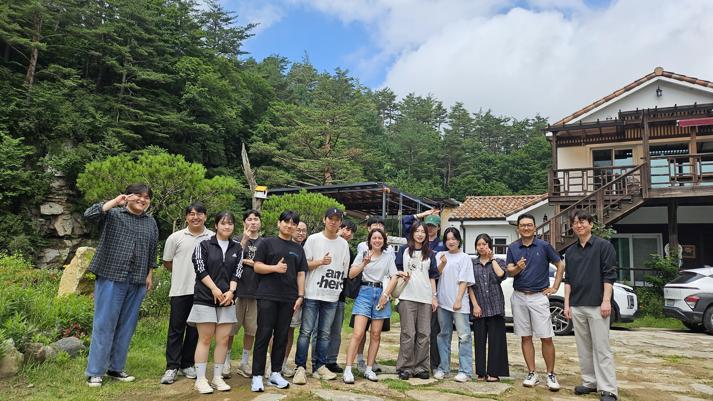
CHL Participates in ICCE 2024 in Rome, Italy
The CHL team, including Prof. Son, Junsu, and Jihyun, attended the ICCE 2024 conference held in Rome, Italy. Each of us delivered engaging talks on the topic of coastal disasters, sharing insights and discussing innovative approaches with the global research community. Beyond the academic exchange, we were captivated by the timeless charm and romantic beauty of Rome, making this conference experience truly unforgettable.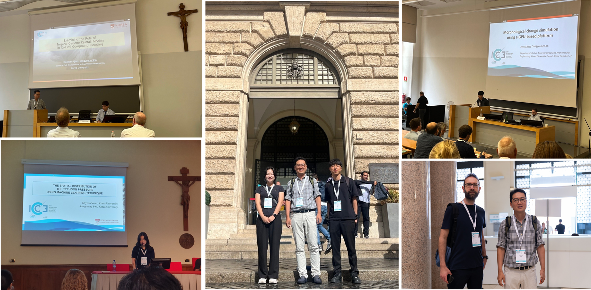
Prof. Son visited UTM in Malaysia
Prof. Son and other three Korean experts in climate change and hydraulic engineering visited Universiti Teknologi Malaysia(UTM) for attending International Symposium on Hydro-Climate , co-organized by BK21 FOUR of Korea University and Centre for River and Coastal Engineering in UTM. We presented their research, sharing the latest developments in climate and hydraulic engineering and exchanging professional knowledge. Prof. Sangyoung Son delivered a presentation titled “Unveiling the Role of Cyclone Movement in Storm Surge Dynamics”, which focused on storm surges. He shared expertise on the development of integrated flood models related to climate change, addressing one of the significant challenges in construction.CHL attended AGU Fall Meeting 2023 at San Francisco, US
CHL members (Dr. Hwang, Junsu and Sehyuk) attended AGU Fall Meeting 2023 held at San Francisco, US. Sehyuk, a master student gave a talk on his topic of storm surge modelling and Sooncheol and Junsu presented their works in the poster session. They've really enjoyed memorable time in San Francisco Bay area.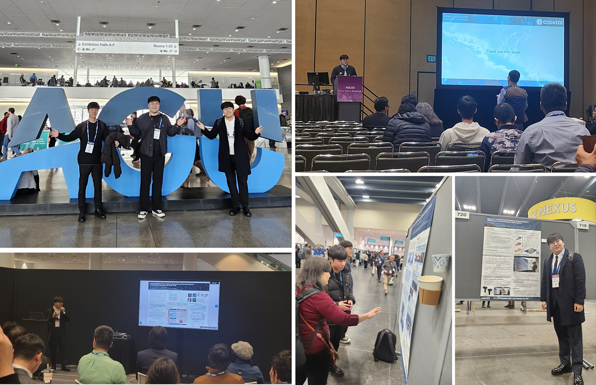
2023 Summer retreat to Jungseon/Samcheok
CHL headed for Samcheok and Jungseon province to have a 2-day summer break. Our itinerary included exploring the Tsunami Prevention Safety Tower and the beach area in Samcheok. This allowed us to immerse ourselves in both field experiences and relaxation. As the day turned to night, we found comfort in a cozy cabin where we enjoyed a delightful BBQ evening. This excursion provided yet another unforgettable memory, filled with joyful moments and a lot of fun!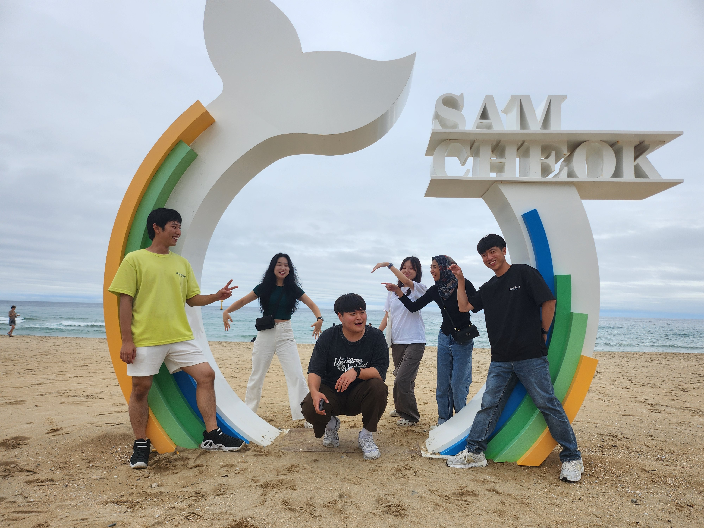
2023 Winter retreat to Naerincheon
CHL had a retreat to Naerincheon, the upper reaches of the Han River during 2023 winter break. Along the way, we stopped at several dams to take in the scenery. During the retreat, lab members participated in a variety of activities, including seminars, hiking along the Birch Forest, relaxing in the Naerincheon trail, and enjoying a barbecue at night. We had a great time, and it was the perfect way to recharge before the upcoming spring semester.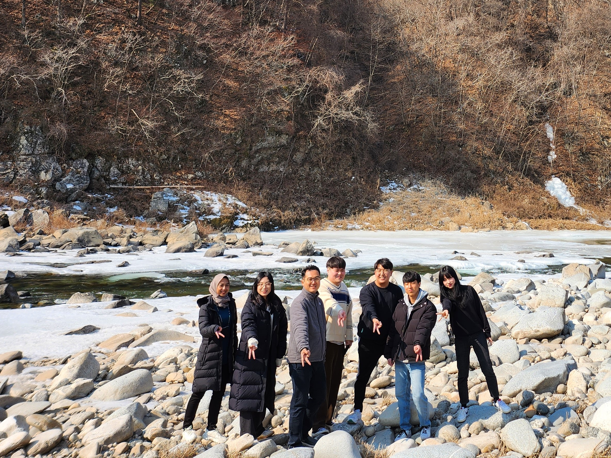
CHL attended ICCE 2022 at Sydney
CHL members (Prof. Son, Sooncheol, Xiaojuan and Asrini) attended 37th International Conference on Coastal Engineering (ICCE) 2022 held at Sydney, Austraila. Soonchel and Xiaojuan gave a talk on their research output and Asrini presented her research in the poster session. We've mingled with other renowned experts over the interesting topics, and enjoyed the beauty of waterfront area at Sydney.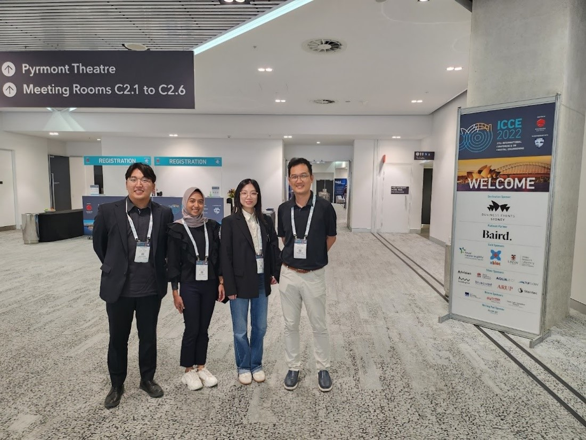
Congrats Dr. Hwang! The first Ph.D alumnus of CHL.
Soonchel has successfully defended his dissertation entitled "Immersive and Interactive Multi-physics Modeling of Coastal Hazards" on 30. Nov. 2022. His research highly focused on the emerging technology in the wave modelling. Congrats Dr. Hwang for your success in Ph.D journey and wish the best for your future career as a professional.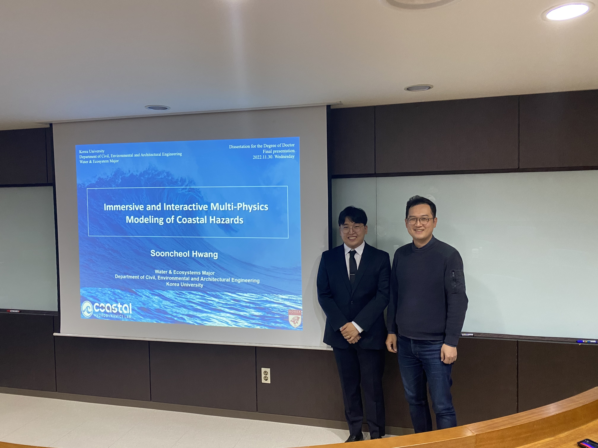
2022 Field trip to Incheon New Port Construction!
As a part of UG class outreach (ACEE348 Coastal Diaster Modelling), UG students and CHL members have visited the construction site of Incheon New Port. The project is 4-year long work aiming at the seawall construction composed of cassion-type seawall. It was not only a great opportunity to feel directly the giant cassion and its manufacturing process, but also a sort of refreshment.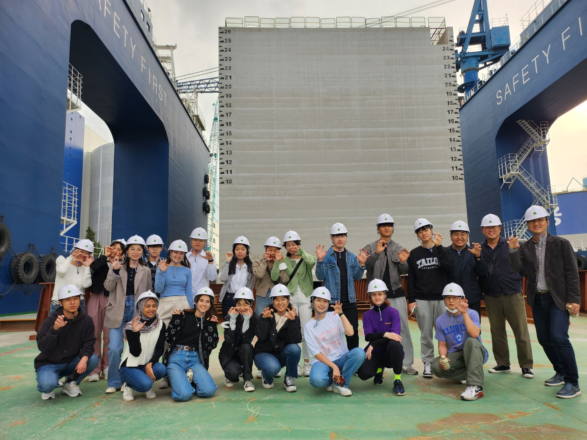
KU Hydro-Engineering Catalogue available !
KU Hydro-Engineering Catalogue is now available for downloading. It is offered in Korean as of now, and English version will be provided soon. The catalogue contains all the informations on KU Hydro-Engineering such as what we are doing, how you can earn the degree, who have been a member and etc. We hope that this information help you get familiar with us. Click the thumbnail below to download it!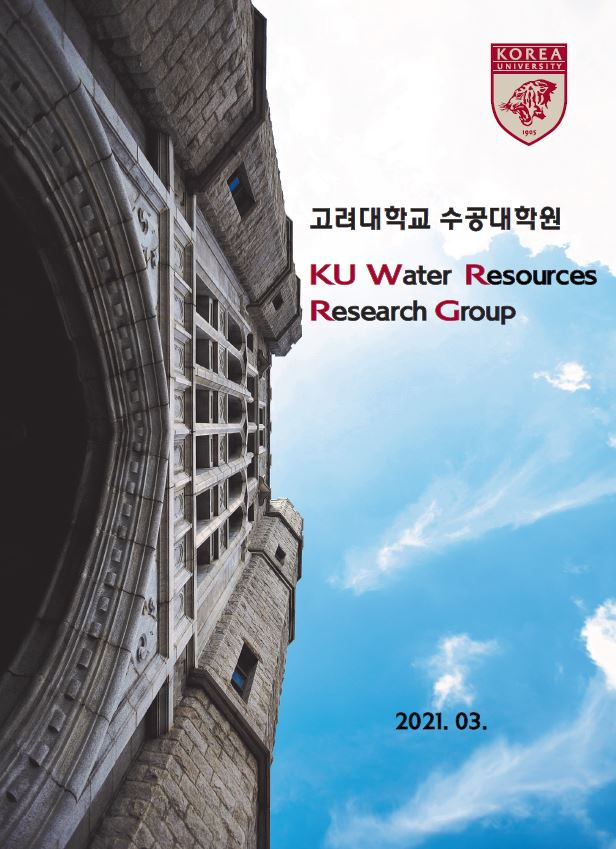
Special Issue on "Advances in Nearshore Hydrodynamics Research"
Journal of Marine Science and Engineering [IF 2.033] had published a Special Issue focusing on Advances in Nearshore Hydrodynamics Research. This issue was first proposed and handled by Dr. Son and totally 5 papers were published successfully.
2019 International Workshop on Advanced Technology in Coastal Engineering
We had successfully hold "International Workshop on Advanced Technology in Coastal Engineering" on Oct. 11, 2019 at Korea University. Prof. Patrick Lynett(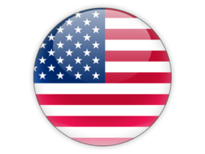
Univ. of Southern California), Dr. Marcel van Gent(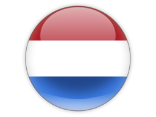
Deltares), Prof. Tso-Ren Wu(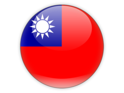
National Central University), Prof. Sungwon Shin(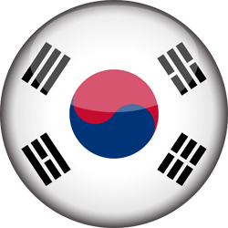
Hanyang Univ.) and Dr. Byoungjoon Na( Korea Univ.) gave talks on interesting front-line topics such as tsunami hazards, climate change adaptions, non-Newtonian flow modelling, wave breaking in the workshop. Thanks all the participants!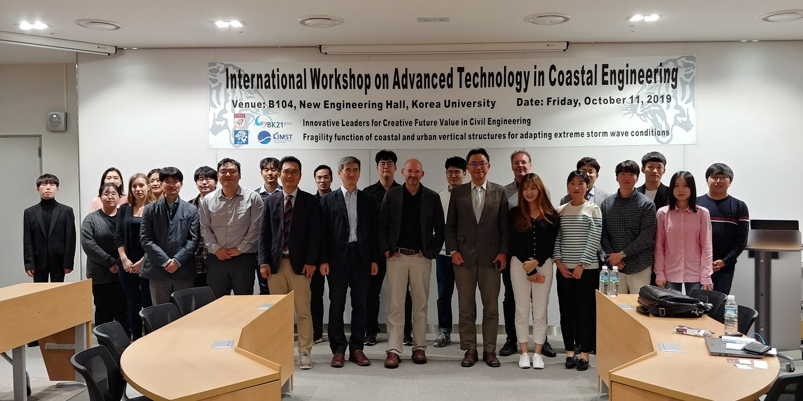
Teaching Schedule (Past and Current)
2021S : ACEE 228 – Fluid Mechanics and Lab., ACE 635 – Computational Hydraulics
17F : ACE 832 – Tidal and Coastline Hydraulics
16S, 18S : ACE 635 – Computational Hydraulics
17S, 19F : ACE 564 – Hydrodynamics
15F, 16F, 17F, 18F, 19F, 20F : ACEE 338 – Coastal and Harbor Engineering
16S, 17S, 18S, 20S : ACEE 228 – Fluid Mechanics and Lab.
15F, 16F, 17F, 18F, 19F, 20F : EGRN 151 – Computer Language and Lab.
19S : on leave